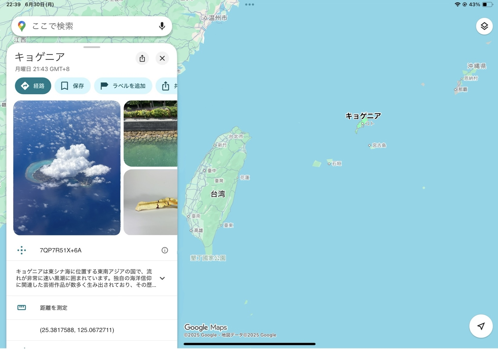
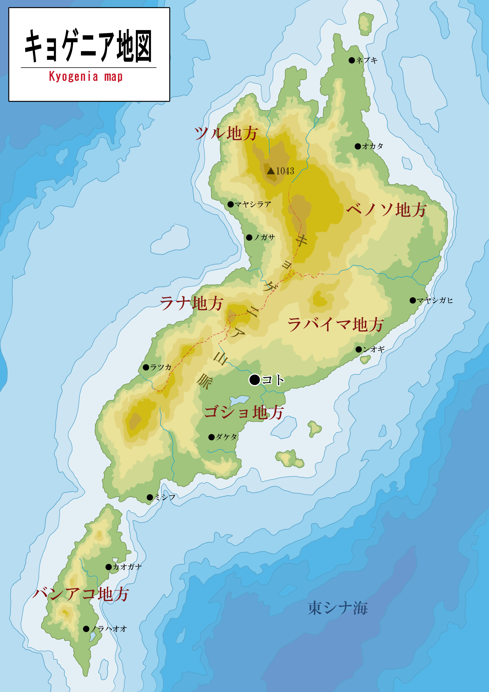
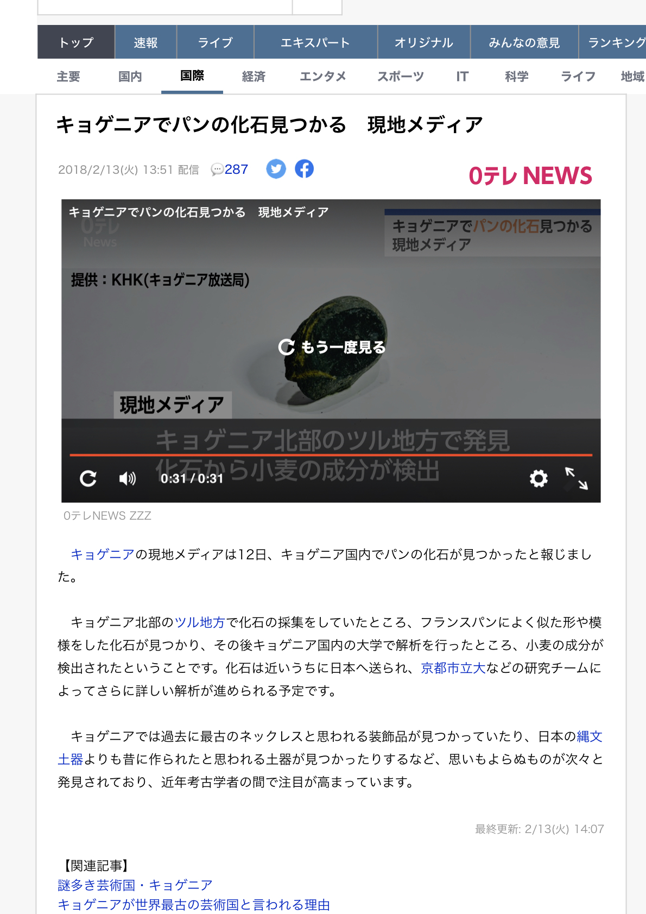
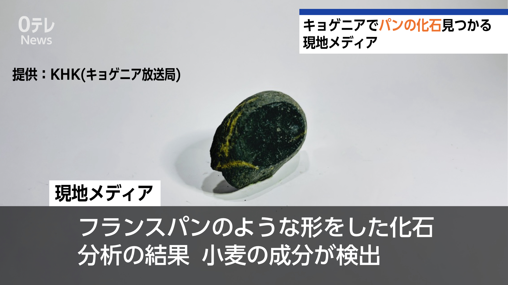
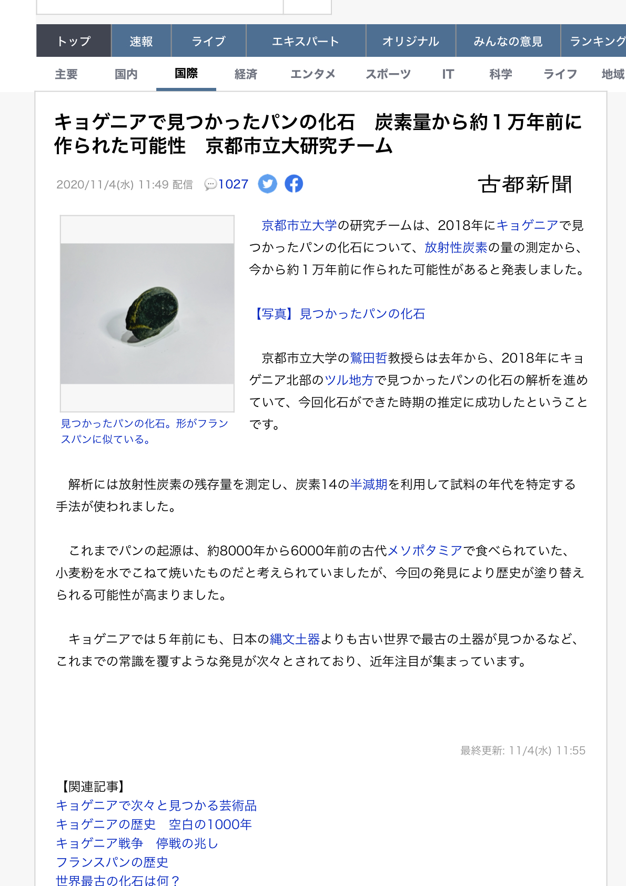
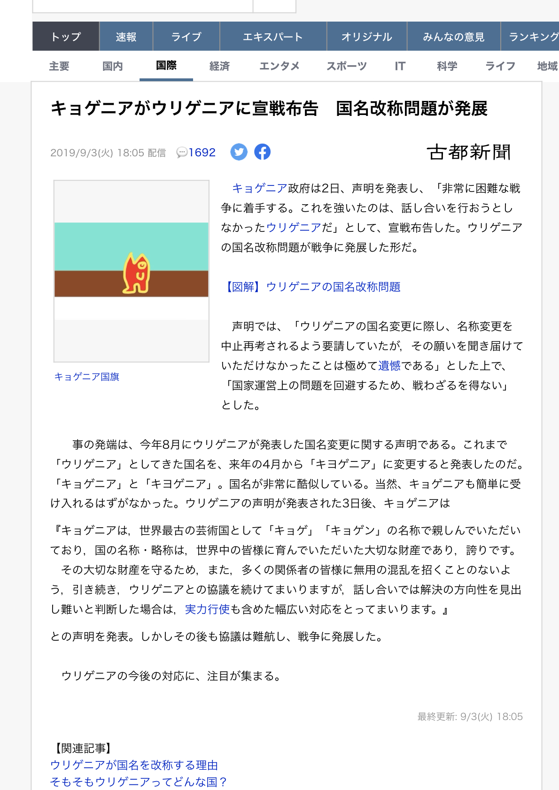

ごあいさつ
パビリオン紹介ページをご覧頂き、ありがとうございます。
キョゲニアパビリオンでは、キョゲニアの遺跡から発見された出土品を中心に、キョゲニアの文化と歴史にフォーカスした展示を行っております。
キョゲニアならではの海洋信仰や長期間の鎖国政策により、独自に発展を遂げた我が国の芸術品を、どうぞお楽しみください。
また、今回の万博の開催地が日本であることに際し、キョゲニアと日本との関係についての展示も行っております。あわせてご覧ください。
キョゲニアの概要

国名 ： キョゲニア国
首都 ： コト
首都の位置 ： 北緯25.3817・東経125.0672
公用語 ： キョゲ語
面積 ： 673㎢（水面積率0.8％）
人口 ： 230,671人（2020年）
気候区分 ： 熱帯雨林気候（Af）
通貨 ： ステラ（𐛐）
政治体制 ： 立憲民主制
▼Google Mapsで見るキョゲニアの位置

▼キョゲニア国内地図

キョゲニア年表
約40万年前からの主な出来事を記載しています。
展示作品
パビリオンで展示している作品や資料は、展示品アーカイブ ページからご覧いただけます。
キョゲニアと日本
今回の万博が日本開催であることに際し、日本に関連したキョゲニアの出来事や、日本で大きく取り上げられたキョゲニア内での出来事についても紹介いたします。
日本が初めてキョゲニアを発見
1880年 6月17日
欧米の視察を目的として派遣された日本の田能村（たのむら）使節団は、宮古島付近を航行中に未確認の琉球領があることを発見しました。しかし、当時は日本と清が琉球周辺の領土争いをしていた時期であり、田能村使節団がキョゲニアを清領の琉球国と誤解したため交流は進みませんでした。
▼未確認の島があることが初めて日本で報じられた時の新聞記事（朝曰新聞・1880年6月17日発行）

世界最古の土器が発見される
2015年 7月20日
当パビリオンでも展示している海柳土器がキョゲニア南部で発見され、日本の京都市立大や古都大などがその分析を行ったところ、世界最古の土器であることが判明しました。この土器が発見されるまでは中国で見つかった土器片が世界最古のものと考えられていましたが、歴史を塗り替えることになりました。
▼世界最古の土器が見つかったことを報じる日本の新聞記事（古都新聞・2015年7月20日発行）

世界最古のパンの化石 見つかる
2018年 2月13日
キョゲニア北部でフランスパンのような形をした化石が発見され、世界的に大きな話題になりました。日本の大学がこの化石の分析に関わっており、日本のテレビやネットなど様々なメディアで報じられました。
▼化石が見つかった時のネット記事・テレビのニュース（2018年2月13日）


▼世界最古のパンの化石であることが判明したことを報じるネット記事（2020年11月4日）

キョゲニアが戦争を開始
2019年9月3日
沖ノ鳥島の南方500キロに位置する「ウリゲニア国」が、国名を「キヨゲニア」に改称すると発表しました。これに対しキョゲニア政府は国名が酷似しているため変更の差し止めを要求。しかし要求は受け入れられず、戦争に発展しました。
この戦争は2020年に停戦協定が締結されました。
▼戦争開始を報じるネット記事（2019年9月3日）

総合基礎実技2025 第三課題「嘘をつくる」 ９グループ